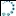

Information content
The PDB format is based on the notion that there is a unique structure of a protein, so that the coordinate of each atom can be exactly specified in a three-dimensional Cartesian coordinate frame. Although this is not strictly true, it is a reasonable approximation for those states of those proteins that are accessible to x-ray structure determination (less so for solution NMR). Accordingly, most of the lines in a PDB file specify atom coordinates and their uncertainties (B factors or anisotropic temperature factors). Atoms are assigned to residues and cofactors and residues and cofactors are assigned to chains. The assignment of cofactors to chains is sometimes arbitrary, as they may not be bound to a single peptide chain. In x-ray structures atoms or residues may be missing, although they were present in the protein under investigation. This means that the corresponding electron density could not be found or assigned, which is often an indication that there is no unique position of these atoms or residues. Furthermore, there may be alternate locations for the same atom, if the density could not be fitted by a single position.
Atom coordinate information is read and processed by most protein visualization programs, although some of them ignore the uncertainties (B factors, anisotropic temperature factors) and many ignore alternate atom locations. For NMR structures, usually several "models" (conformations) are given to provide an estimate of combined flexibility and uncertainty. Some protein visualization programs read only one of those models.
There is considerably more information in PDB files, which is ignored by most programs that process them. This information includes:
- the title of the protein and the protein class
- the primary citation (journal article) and, possibly, further literature references
- the biological or chemical source of the protein, e.g. the organism
- keywords
- information on the experiment that provided the structure data
- the number of alternative models for the structure (mainly NMR structures)
- author information
- information on revisions of the PDB file
- for diffraction experiments, the resolution
- metal coordination by residues and cofactors
- binding sites (usually for cofactors)
- information on the UniProt databank entry of the amino acid sequence(s)
- the sequence of the protein studied (not always consistent with coordinate entries>
- sequence modifications, e.g. mutations
- list of helices, quite often nonsensical and justly ignored by most visualization programs
- list of sheets
- list of bonds, except between amino acid atoms
MMM reads and processes all this information, except for the biological or chemical source and information on revisions. The list of helices is repaired, when found to be nonsensical. It is advisable to redefine helices, using the information (and helix nomenclature) that is often provided in the primary citation. For sheets, the current version of MMM processes only the assignment of residues to strands, but ignores the register information how the strands form sheets (although this information is reliable). This may be mended in a future version of MMM.
In fact, PDB files may contain even more information than listed above. Most of this is information is about experimental details that are not needed for modeling or structure inspection in MMM. Some other information might potentially be useful, but is missing in a huge majority of PDB files. If more PDB files with such information appear, MMM's PDB reader will be updated to use it.
Note also that even the information listed above is not present in all PDB files. The PDB format defines some information as mandatory and other information as optional (and some optional information as mandatory for certain experiment types).
How MMM stores and displays information from PDB files
MMM creates a hierarchical model of the structure that contains all residues and cofactors of which at least some atom coordinates are known and all atom coordinates, including alternate locations with their declared populations. Coordinate sets for all models of an NMR structure are stored and are individually accessible. If you are a programmer and are interested in details of the internal data structure, consult the comment section (first lines) of file rd_pdb.m, which can be found in the main directory of MMM.
Furthermore, MMM maintains sequence information that also lists missing residues, as far as this can be reconstructed from the sequence information in the PDB file. This is very often- but not always- the case.
MMM stores secondary structure assignments and a list of helices and strands for all chains. Unlike many other visualization programs, MMM does not try to second guess this information by analysis of backbone geometry. We advise to stick with the seondary structure assignment by the authors of the PDB entry, which, unfortunately, is not found in the PDB file but usually in the primary paper describing the structure. Note that sometimes even the secondary structure information in the PDB file may be reliable.
Author, title, protein class, and keyword information can be inspected via the annotation page of the structure (select the whole structure and click the annotation toolbutton). Keywords are also listed when you do a PubMed literature search.
A list of binding sites is maintained and can be accessed via the Analysis/Sites menu subitem. Furthermore, the residues and cofactors involved in the binding sites are annotated and can be easily found via the keyword finder, which is accessible from the Edit menu. The Analysis/Sites menu subitem permits convenient binding site visualization, but note that the software used by the PDB annotators for binding site declaration is quite generous in granting a residue binding site status. A coordinative or hydrogen bond does not seem to be a requirement, and probably not even van-der-Waals contact.
A list of metal binding sites is maintained, but is not accessible via a dedicated window. Rather, metal binding atoms and the metal atoms itself are annotated and can be found via the keyword finder, which is accessible from the Edit menu. The metal binding site information appears to be reliable, if provided. Note that it may be missing, even if there are metal binding sites.
Mutations with respect to the database sequence (MODRES records in the PDB file) are annotated at residue level and can be found with the keyword mutations.
The primary journal reference and any further references are stored in the reference list of the model. They are assigned short names that start with PDB_ and the PDB identifier, the primary reference is marked. You can change these short names if you wish. The references are accessible via the  references toolbutton. Reference information in the PDB file is incomplete and formatted in an ugly way. If possible, MMM reconstructs the citation by PubMed access.
references toolbutton. Reference information in the PDB file is incomplete and formatted in an ugly way. If possible, MMM reconstructs the citation by PubMed access.
Resolution, which is specified only for diffraction based structures, is shown in the title of the main window.
The UniProt sequence database information is stored for each chain. In the hierarchy window, an UniProt button  allows access to the corresponding webpage, which is a rich source of further information on this protein. This webpage may also have information on related structures.
An assessment of the PDB format
The PDB format was defined in the 1970s at first exclusively for x-ray structures of proteins, at a time, when structural biology was in its infancy and computers worked with punch cards limited to 80 characters per line. Computer memory was so expensive that people cared about saving one bit per character and thought it was unneccessary luxus to distinguish between upper and lower case letters.
The PDB format has since evolved and is still able to accommodate the most important information about atomistically resolved new structures, with some limitations. After more than three decades of evolution, entropy of the PDB format is still surprisingly low, which indicates that the original idea was a stroke of genius. We still think that one should not stick so closely to an idea for such a long time, even if it was a good one.
From the aspect of current knowledge about protein structure and the state of the art of informatics, the PDB format may appear outdated. It will still survive, since there are so many programs that process it. Modernization of the format with duplication of the data bank was attempted, but the new format provides only part of the information. The Protein Data Bank has an internal data base that is more modern, as is obvious from their web page display. MMM provides direct access to the web page for a given structure via the PDB button hierarchy window.
Generally, the current format does not pose big problems. There are three notable exceptions:
- HELIX records
- insertion codes
- the SEQRES record
The HELIX records appear to be generated by incorrect software, most likely wrong post-processing of DSSP information. In a substantial fraction of PDB files they are obviously wrong, i.e. consecutive helices in the same chain overlap or a continuous helix is split. They are also typically longer by one residue each on both sites than you would expect. Information from these records should be used only with utmost care. Currently MMM reads the records and corrects internal inconsistencies. If DSSP is installed, MMM reassigns secondary structure based on DSSP (with a little bit generosity to "repair" helix breaks that most structural biologists would not consider as helix breaks). The user is free to redefine secondary structure assignment (and then keep it stable when the model is reloaded in MMM format). By writing an initialization script, a stable individual secondary structure definition can also be achieved when reloading the same PDB file as a local file.
The insertion codes were invented to match residue numbering to some perceived reference sequence of a related protein. Although the originators probably had good intentions and some reasons, we consider this idea as flawed. First, there is no generally accepted reference sequence for a group of proteins. Second, the PDB format does not even provide a means for listing the reference sequence used by the authors (and its origin). As a result, the residue numbering with insertion codes is arbitrary and it comes at the expense of having residue numbers that are no longer unique.
Current PDB format definitions (Version 3.20) do not advertise insertion codes anymore. However, they do not yet seem to be outlawed for new PDB entries, as they should be in our opinion.
MMM does read the insertion codes and uses them for constructing the residue address. This guarantees that in structures with insertion-code residues every residue and atom can still be addressed. What cannot be solved is the mismatch between residue numbering in the PDB structure and in the true sequence of the chain. There are two possible workarounds. First, one could automatically renumber residues to match the true sequence. This would introduce a mismatch with numbering in the original PDB file. Second, one could keep residue numbers from the original PDB file and suppress residues with insertion codes in sequence display.
The second choice is closer to the intentions of the authors of the original PDB file and- in our opinion- creates less confusion (some confusion is unavoidable). Hence, MMM works this way. However, a future version might provide the option of residue renumbering (secondary literature on such structures often does this).
The SEQRES record can only be fully interpreted together with the DBREF record (no problem) and a query to the data base that contains the original sequence (this is a problem).
If the DBREF record points to an UNIPROT sequence and the computer is connected to the internet when reading the PDB file, MMM solves this problem by downloading the sequence in FASTA format.
Furthermore, PDB files are not necessarily consistent about the use of MODRES and SEQADV records in reporting on enginieered mutations. The current version of MMM analyzes the MODRES record, which is the proper place for this information according to the official format definition. SEQADV is supposed to be only for unclarified differences between database and true sequence. See, e.g. PDB file 1QJP for a case that does not conform to official format.
Duplication of the data bank and PDBML format
Finally, an XML format (PDBML) has been developed and the data bank duplicated. The main design decisions in this development were simplicity of translation from PDB format into this format (and back) and preservation of the semantics (J. Westbrook, N. Ito, H. Nakamura, K. Henrick, H. M. Berman, Bioinformatics 2005 21, 988–992. doi:10.1093/bioinformatics/bti082). This format leads to much larger files and appears to list only atom coordinates. The advantage is that there is an abundance of software for reading, processing, and writing XML files. To our opinion, this advantage is far outweighed by the disadvantage of information loss.
Version